Somos una plataforma web de trazabilidad y sanidad donde puedan registrar digitalmente a sus animales, con información sobre historial sanitario, vacunas, peso y certificaciones, garantizando datos confiables y transparentes.
¿Cómo funciona?
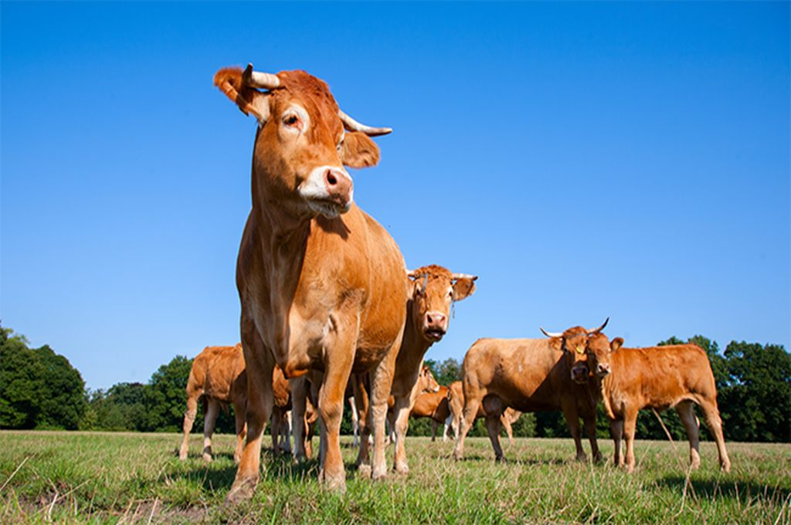
Usted puede registrar digitalmente a sus animales en donde otras personas interesadas o usted mismo pueda revisar todo lo que registre y anote para, usted, revisar información que necesite o alguien que este interesado en su producto visualice dicha información.
¿Quienes somos?
En RumiLink, buscamos conectar a los ganaderos con los compradores del sector formal para mejorar la producción y la sanidad del ganado en el Perú. Somos una startup llamada AgroNexo, formada por estudiantes comprometidos con modernizar el sector ganadero a través de la tecnología.
Creemos que la información sanitaria y la trazabilidad del ganado son claves para garantizar alimentos de calidad y abrir nuevas oportunidades de mercado. Por eso, desarrollamos una plataforma digital que permite a los productores registrar la salud, vacunas y certificaciones de sus animales, brindando confianza y transparencia a los compradores.
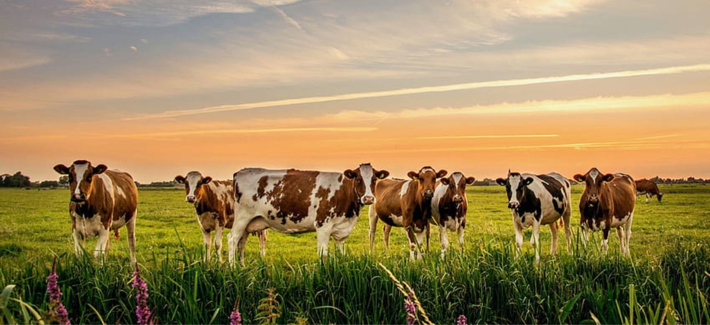
Nuestro ritmo de trabajo
1. Registra tu ganado fácilmente
Desde tu cuenta de usuario, podrás registrar cada animal con su información básica: raza, edad, peso y número de identificación. En minutos tendrás tu rebaño digitalizado y listo para gestionar.
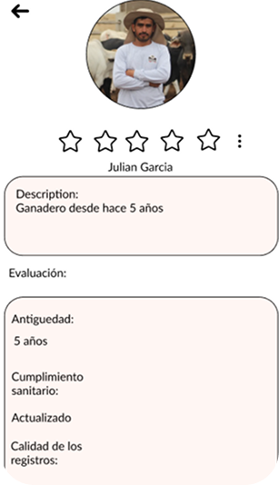
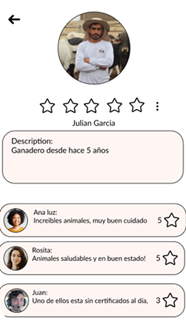
2. Lleva el control sanitario al día
RumiLink te permite registrar vacunas, desparasitaciones, partos, alimentación y cualquier evento importante. Además, recibirás recordatorios automáticos para no olvidar tu calendario sanitario.
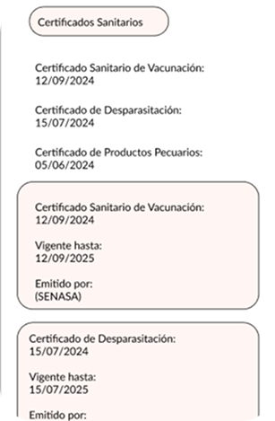
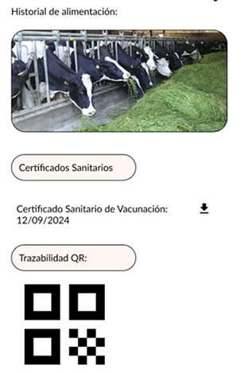
3. Genera certificados digitales con validez
Cada registro genera automáticamente una ficha sanitaria digital, que puedes descargar o compartir con compradores formales. Los certificados están vinculados a datos verificados, lo que aumenta la confianza y la trazabilidad.
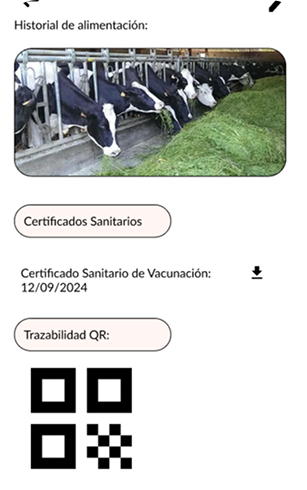
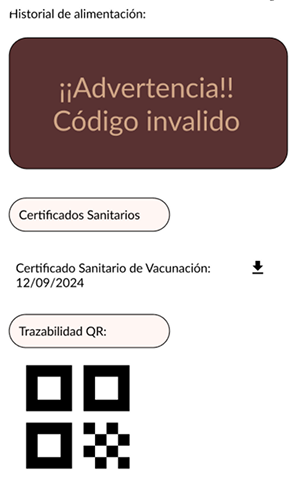
4. Conecta con compradores formales
Los compradores del sector formal pueden buscar ganaderos verificados, filtrar animales según su estado sanitario o ubicación, y acceder a certificados digitales antes de concretar una compra. Más transparencia, más oportunidades de negocio.
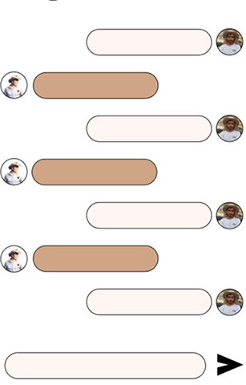
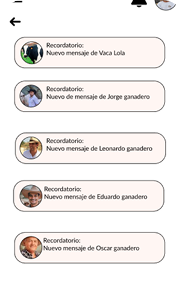
5. Accede desde cualquier lugar
Diseñamos RumiLink para que funcione incluso sin conexión a internet, permitiendo registrar datos en campo y sincronizarlos después. Ya sea desde tu laptop o tu celular, la información de tu ganado siempre estará disponible y segura.
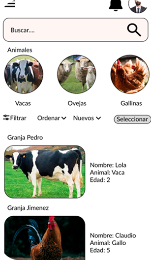
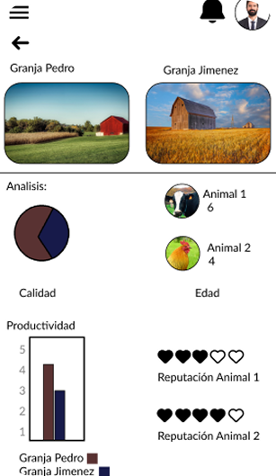
Explora todas nuestras opciones
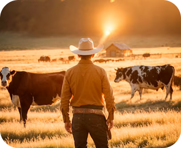
Perfiles Ganaderos
Catálogos
Historial Sanitario
Ubicación Geográfica
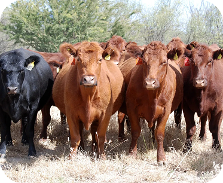
Comparación de Ganados
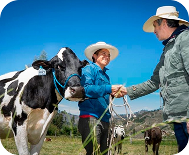
Consultar Experiencia
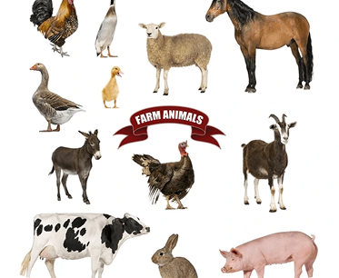
Búsqueda de animales por filtros
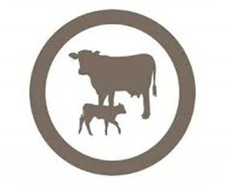
Actualizar Certificado digita
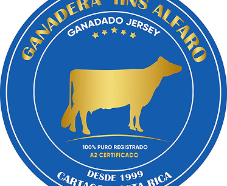
Generar Certificado digital
Somos AgroNexo, buscamos fortalecer la coordinación de productores y compradores del sector formal para mejorar los niveles de producción y sanidad de los ganados mayores. Nuestra misión es facilitar la coordinación de los actores de la cadena del ganado mediante nuestra solución RumiLink.